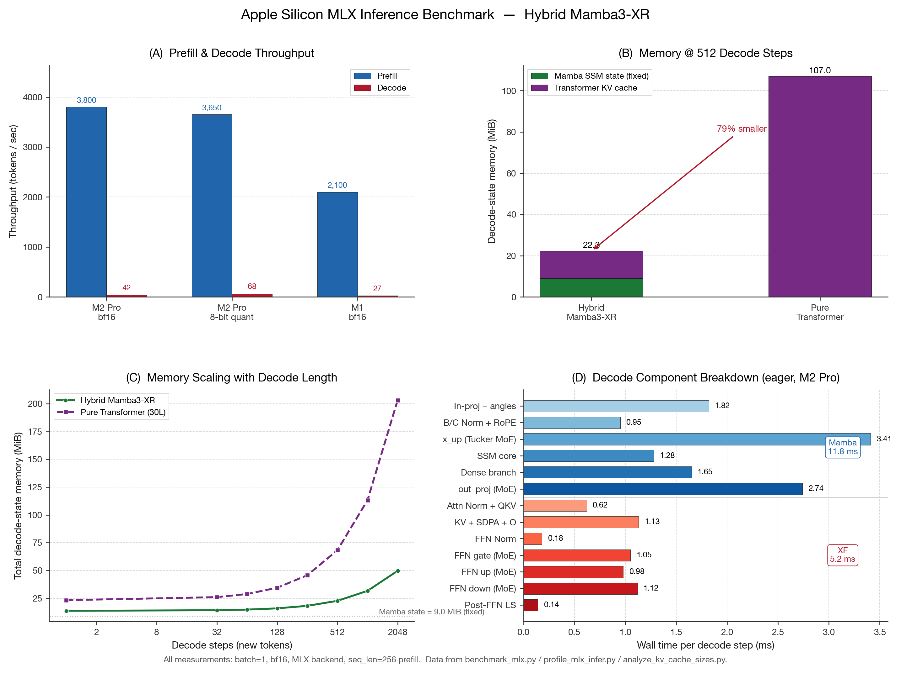

<!-- s_results.html — Combined Results, Compression & Conclusion -->
<div class="sec s">
  <div class="sh">Main Results, Compression Study &amp; Conclusion</div>
  <div class="sc">

    <!-- 5 key stats in one row -->
    <div style="display:grid;grid-template-columns:repeat(5,1fr);gap:2mm;margin-bottom:3.5mm;">
      <div class="sb"><span class="sn">82.87%</span><span class="sl">Compression<br>2.43B→417M</span></div>
      <div class="sb"><span class="sn">~90%</span><span class="sl">Inference Cost<br>Reduction</span></div>
      <div class="sb"><span class="sn">2.4B</span><span class="sl">Dense-Equiv<br>Capacity</span></div>
      <div class="sb"><span class="sn" style="font-size:32pt;">0.00135</span><span class="sl">Tucker MSE<br>@ 82.87%</span></div>
      <div class="sb"><span class="sn" style="font-size:32pt;color:#2B6CB0;">0.00247</span><span class="sl">SVD MSE<br><span class="acc">45.3% worse</span></span></div>
    </div>

    <!-- MLX Benchmark Chart -->
    <div style="margin-bottom:3mm;">
      
    </div>

    <!-- Pareto Frontier SVG (no caption) -->
    <div class="svgw" style="margin-bottom:3mm;">
      <svg viewBox="0 0 540 210" xmlns="http://www.w3.org/2000/svg"
           style="font-family:'Times New Roman',Times,serif;">
        <rect x="50" y="10" width="470" height="170" fill="#F8F9FB" stroke="#E2E8F0" stroke-width="1"/>
        <line x1="50" y1="52" x2="520" y2="52" stroke="#E2E8F0" stroke-width="0.7"/>
        <line x1="50" y1="94" x2="520" y2="94" stroke="#E2E8F0" stroke-width="0.7"/>
        <line x1="50" y1="136" x2="520" y2="136" stroke="#E2E8F0" stroke-width="0.7"/>
        <line x1="164" y1="10" x2="164" y2="180" stroke="#E2E8F0" stroke-width="0.7"/>
        <line x1="278" y1="10" x2="278" y2="180" stroke="#E2E8F0" stroke-width="0.7"/>
        <line x1="392" y1="10" x2="392" y2="180" stroke="#E2E8F0" stroke-width="0.7"/>
        <line x1="50"  y1="180" x2="520" y2="180" stroke="#475569" stroke-width="1.5"/>
        <line x1="50"  y1="10"  x2="50"  y2="180" stroke="#475569" stroke-width="1.5"/>
        <!-- X labels -->
        <text x="50"  y="193" font-size="9" fill="#6B7280" text-anchor="middle">0</text>
        <text x="164" y="193" font-size="9" fill="#6B7280" text-anchor="middle">200M</text>
        <text x="278" y="193" font-size="9" fill="#6B7280" text-anchor="middle">400M</text>
        <text x="392" y="193" font-size="9" fill="#6B7280" text-anchor="middle">600M</text>
        <text x="520" y="193" font-size="9" fill="#6B7280" text-anchor="middle">800M</text>
        <text x="285" y="205" font-size="10" fill="#475569" text-anchor="middle" font-weight="700">Active Parameters at Inference (Inference Cost Proxy)</text>
        <!-- Y labels (PPL) -->
        <text x="44" y="180" font-size="9" fill="#6B7280" text-anchor="end">26</text>
        <text x="44" y="136" font-size="9" fill="#6B7280" text-anchor="end">22</text>
        <text x="44" y="94"  font-size="9" fill="#6B7280" text-anchor="end">19</text>
        <text x="44" y="52"  font-size="9" fill="#6B7280" text-anchor="end">16</text>
        <text x="14" y="97"  font-size="10" fill="#475569" text-anchor="middle" font-weight="700" transform="rotate(-90 14 97)">Perplexity ↓</text>
        <!-- Dense frontier -->
        <path d="M 50,180 Q 90,166 144,143 Q 200,128 256,109 Q 380,80 497,58 L 520,52"
              fill="none" stroke="#9CA8BC" stroke-width="2" stroke-dasharray="6 3"/>
        <text x="460" y="48" font-size="9" fill="#9CA8BC" font-style="italic">Dense frontier</text>
        <!-- Baselines -->
        <circle cx="144" cy="143" r="5" fill="#CBD5E1" stroke="#94A3B8" stroke-width="1.2"/>
        <circle cx="256" cy="109" r="5" fill="#CBD5E1" stroke="#94A3B8" stroke-width="1.2"/>
        <circle cx="497" cy="58"  r="5" fill="#CBD5E1" stroke="#94A3B8" stroke-width="1.2"/>
        <circle cx="222" cy="119" r="5" fill="#DBEAFE" stroke="#1455A4" stroke-width="1.2"/>
        <circle cx="291" cy="101" r="5" fill="#DBEAFE" stroke="#1455A4" stroke-width="1.2"/>
        <!-- Ours ★ (230M, PPL 18.5) -->
        <text x="185" y="68" font-size="22" fill="#C0392B" text-anchor="middle" font-weight="700">★</text>
        <text x="185" y="55" font-size="10" fill="#C0392B" text-anchor="middle" font-weight="700">Ours (230M active)</text>
        <!-- Annotation arrow -->
        <line x1="200" y1="68" x2="488" y2="68" stroke="#C0392B" stroke-width="1.2" stroke-dasharray="3 2"
              marker-end="url(#arRes2)"/>
        <defs>
          <marker id="arRes2" markerWidth="7" markerHeight="7" refX="6" refY="3.5" orient="auto">
            <path d="M0,0 L7,3.5 L0,7 Z" fill="#C0392B"/>
          </marker>
        </defs>
        <rect x="280" y="59" width="125" height="14" rx="3" fill="#FFF" opacity="0.9"/>
        <text x="342" y="69" font-size="9.5" fill="#C0392B" text-anchor="middle" font-weight="700">~90% fewer active params →</text>
        <!-- Legend -->
        <circle cx="54" cy="14" r="4" fill="#CBD5E1" stroke="#94A3B8" stroke-width="1"/>
        <text x="61" y="17" font-size="9" fill="#6B7280">Dense</text>
        <circle cx="105" cy="14" r="4" fill="#DBEAFE" stroke="#1455A4" stroke-width="1"/>
        <text x="112" y="17" font-size="9" fill="#1455A4">Prior SSM/MoE</text>
        <text x="192" y="17" font-size="12" fill="#C0392B" font-weight="700">★</text>
        <text x="202" y="17" font-size="9" fill="#C0392B" font-weight="700">Ours — 2.4B dense-equiv @ 230M active</text>
      </svg>
    </div>

    <!-- Compression charts side by side -->
    <div style="display:flex;gap:3mm;margin-bottom:3mm;">
      <!-- Tucker vs SVD -->
      <div style="flex:1;">
        <div class="svgw">
          <svg viewBox="0 0 270 175" xmlns="http://www.w3.org/2000/svg"
               style="font-family:'Times New Roman',Times,serif;">
            <rect x="34" y="10" width="228" height="138" fill="#F8F9FB" stroke="#E2E8F0" stroke-width="1"/>
            <line x1="34" y1="43"  x2="262" y2="43"  stroke="#E2E8F0" stroke-width="0.7"/>
            <line x1="34" y1="76"  x2="262" y2="76"  stroke="#E2E8F0" stroke-width="0.7"/>
            <line x1="34" y1="109" x2="262" y2="109" stroke="#E2E8F0" stroke-width="0.7"/>
            <line x1="103" y1="10" x2="103" y2="148" stroke="#E2E8F0" stroke-width="0.7"/>
            <line x1="172" y1="10" x2="172" y2="148" stroke="#E2E8F0" stroke-width="0.7"/>
            <line x1="34"  y1="148" x2="262" y2="148" stroke="#475569" stroke-width="1.2"/>
            <line x1="34"  y1="10"  x2="34"  y2="148" stroke="#475569" stroke-width="1.2"/>
            <text x="34"  y="158" font-size="8.5" fill="#6B7280" text-anchor="middle">70%</text>
            <text x="125" y="158" font-size="8.5" fill="#6B7280" text-anchor="middle">80%</text>
            <text x="216" y="158" font-size="8.5" fill="#6B7280" text-anchor="middle">90%</text>
            <text x="262" y="158" font-size="8.5" fill="#6B7280" text-anchor="middle">95%</text>
            <text x="148" y="170" font-size="9" fill="#475569" text-anchor="middle" font-weight="700">Compression Ratio</text>
            <text x="30" y="148" font-size="8" fill="#6B7280" text-anchor="end">0</text>
            <text x="30" y="109" font-size="8" fill="#6B7280" text-anchor="end">.002</text>
            <text x="30" y="76"  font-size="8" fill="#6B7280" text-anchor="end">.004</text>
            <text x="30" y="43"  font-size="8" fill="#6B7280" text-anchor="end">.006</text>
            <text x="10" y="80"  font-size="8" fill="#475569" text-anchor="middle" transform="rotate(-90 10 80)">MSE ↓</text>
            <!-- Tucker -->
            <polyline points="34,137 80,133 125,128 151,123 171,118 216,103 262,70"
                      fill="none" stroke="#1455A4" stroke-width="2.2"/>
            <circle cx="151" cy="123" r="3.5" fill="#C0392B" stroke="#FFF" stroke-width="1"/>
            <!-- SVD -->
            <polyline points="34,132 80,125 125,115 151,102 171,90 216,56 262,13"
                      fill="none" stroke="#94A3B8" stroke-width="2.2" stroke-dasharray="4 2"/>
            <circle cx="151" cy="102" r="3.5" fill="#2563EB" stroke="#FFF" stroke-width="1"/>
            <!-- 82.87% marker -->
            <line x1="151" y1="10" x2="151" y2="148" stroke="#C0392B" stroke-width="1" stroke-dasharray="2 2"/>
            <text x="151" y="20" font-size="8" fill="#C0392B" text-anchor="middle" font-weight="700">82.87%</text>
            <text x="167" y="116" font-size="8" fill="#C0392B" font-weight="700">45.3%↑</text>
            <!-- Legend -->
            <line x1="37" y1="14" x2="58" y2="14" stroke="#1455A4" stroke-width="2"/>
            <text x="61" y="17" font-size="8.5" fill="#1455A4" font-weight="700">Tucker (ours)</text>
            <line x1="37" y1="24" x2="58" y2="24" stroke="#94A3B8" stroke-width="2" stroke-dasharray="4 2"/>
            <text x="61" y="27" font-size="8.5" fill="#94A3B8">SVD baseline</text>
          </svg>
        </div>
        <div class="fc">Fig. 3 — Tucker ⊋ SVD at 80–95% compression.</div>
      </div>

      <!-- Router diagnostics -->
      <div style="flex:1;">
        <div class="svgw">
          <svg viewBox="0 0 270 175" xmlns="http://www.w3.org/2000/svg"
               style="font-family:'Times New Roman',Times,serif;">
            <rect x="5" y="5" width="260" height="158" rx="5" fill="#F8F9FB" stroke="#E2E8F0" stroke-width="1"/>
            <text x="135" y="19" font-size="10" fill="#111827" text-anchor="middle" font-weight="700">Expert Load Distribution (66 experts)</text>
            <text x="8" y="38"  font-size="7" fill="#6B7280">L1–11</text>
            <text x="8" y="58"  font-size="7" fill="#6B7280">L12–22</text>
            <text x="8" y="78"  font-size="7" fill="#6B7280">L23–33</text>
            <text x="8" y="98"  font-size="7" fill="#6B7280">L34–44</text>
            <text x="8" y="118" font-size="7" fill="#6B7280">L45–55</text>
            <text x="8" y="138" font-size="7" fill="#6B7280">L56–66</text>
            <g transform="translate(38,25)"><rect x="0"   y="0"  width="16" height="13" rx="2" fill="#1455A4" opacity="0.75"/><rect x="19"  y="3"  width="16" height="10" rx="2" fill="#1455A4" opacity="0.85"/><rect x="38"  y="1"  width="16" height="12" rx="2" fill="#1455A4" opacity="0.80"/><rect x="57"  y="4"  width="16" height="9"  rx="2" fill="#1455A4" opacity="0.70"/><rect x="76"  y="2"  width="16" height="11" rx="2" fill="#1455A4" opacity="0.90"/><rect x="95"  y="0"  width="16" height="13" rx="2" fill="#1455A4" opacity="0.75"/><rect x="114" y="3"  width="16" height="10" rx="2" fill="#1455A4" opacity="0.82"/><rect x="133" y="1"  width="16" height="12" rx="2" fill="#1455A4" opacity="0.78"/><rect x="152" y="5"  width="16" height="8"  rx="2" fill="#1455A4" opacity="0.72"/><rect x="171" y="2"  width="16" height="11" rx="2" fill="#1455A4" opacity="0.88"/><rect x="190" y="4"  width="16" height="9"  rx="2" fill="#1455A4" opacity="0.76"/></g>
            <g transform="translate(38,45)"><rect x="0"   y="3"  width="16" height="10" rx="2" fill="#2B6CB0" opacity="0.80"/><rect x="19"  y="1"  width="16" height="12" rx="2" fill="#2B6CB0" opacity="0.75"/><rect x="38"  y="0"  width="16" height="13" rx="2" fill="#2B6CB0" opacity="0.90"/><rect x="57"  y="4"  width="16" height="9"  rx="2" fill="#2B6CB0" opacity="0.68"/><rect x="76"  y="2"  width="16" height="11" rx="2" fill="#2B6CB0" opacity="0.83"/><rect x="95"  y="3"  width="16" height="10" rx="2" fill="#2B6CB0" opacity="0.77"/><rect x="114" y="0"  width="16" height="13" rx="2" fill="#2B6CB0" opacity="0.92"/><rect x="133" y="5"  width="16" height="8"  rx="2" fill="#2B6CB0" opacity="0.71"/><rect x="152" y="1"  width="16" height="12" rx="2" fill="#2B6CB0" opacity="0.87"/><rect x="171" y="3"  width="16" height="10" rx="2" fill="#2B6CB0" opacity="0.79"/><rect x="190" y="2"  width="16" height="11" rx="2" fill="#2B6CB0" opacity="0.85"/></g>
            <g transform="translate(38,65)"><rect x="0"   y="1"  width="16" height="12" rx="2" fill="#1455A4" opacity="0.82"/><rect x="19"  y="4"  width="16" height="9"  rx="2" fill="#1455A4" opacity="0.73"/><rect x="38"  y="2"  width="16" height="11" rx="2" fill="#1455A4" opacity="0.88"/><rect x="57"  y="0"  width="16" height="13" rx="2" fill="#1455A4" opacity="0.76"/><rect x="76"  y="3"  width="16" height="10" rx="2" fill="#1455A4" opacity="0.84"/><rect x="95"  y="5"  width="16" height="8"  rx="2" fill="#1455A4" opacity="0.69"/><rect x="114" y="1"  width="16" height="12" rx="2" fill="#1455A4" opacity="0.91"/><rect x="133" y="2"  width="16" height="11" rx="2" fill="#1455A4" opacity="0.80"/><rect x="152" y="4"  width="16" height="9"  rx="2" fill="#1455A4" opacity="0.75"/><rect x="171" y="0"  width="16" height="13" rx="2" fill="#1455A4" opacity="0.86"/><rect x="190" y="3"  width="16" height="10" rx="2" fill="#1455A4" opacity="0.78"/></g>
            <g transform="translate(38,85)"><rect x="0"   y="2"  width="16" height="11" rx="2" fill="#2B6CB0" opacity="0.79"/><rect x="19"  y="0"  width="16" height="13" rx="2" fill="#2B6CB0" opacity="0.88"/><rect x="38"  y="5"  width="16" height="8"  rx="2" fill="#2B6CB0" opacity="0.70"/><rect x="57"  y="1"  width="16" height="12" rx="2" fill="#2B6CB0" opacity="0.83"/><rect x="76"  y="3"  width="16" height="10" rx="2" fill="#2B6CB0" opacity="0.76"/><rect x="95"  y="0"  width="16" height="13" rx="2" fill="#2B6CB0" opacity="0.92"/><rect x="114" y="4"  width="16" height="9"  rx="2" fill="#2B6CB0" opacity="0.73"/><rect x="133" y="2"  width="16" height="11" rx="2" fill="#2B6CB0" opacity="0.85"/><rect x="152" y="1"  width="16" height="12" rx="2" fill="#2B6CB0" opacity="0.80"/><rect x="171" y="5"  width="16" height="8"  rx="2" fill="#2B6CB0" opacity="0.72"/><rect x="190" y="3"  width="16" height="10" rx="2" fill="#2B6CB0" opacity="0.87"/></g>
            <g transform="translate(38,105)"><rect x="0"   y="0"  width="16" height="13" rx="2" fill="#1455A4" opacity="0.85"/><rect x="19"  y="3"  width="16" height="10" rx="2" fill="#1455A4" opacity="0.77"/><rect x="38"  y="1"  width="16" height="12" rx="2" fill="#1455A4" opacity="0.90"/><rect x="57"  y="4"  width="16" height="9"  rx="2" fill="#1455A4" opacity="0.71"/><rect x="76"  y="2"  width="16" height="11" rx="2" fill="#1455A4" opacity="0.83"/><rect x="95"  y="0"  width="16" height="13" rx="2" fill="#1455A4" opacity="0.79"/><rect x="114" y="5"  width="16" height="8"  rx="2" fill="#1455A4" opacity="0.74"/><rect x="133" y="1"  width="16" height="12" rx="2" fill="#1455A4" opacity="0.88"/><rect x="152" y="3"  width="16" height="10" rx="2" fill="#1455A4" opacity="0.76"/><rect x="171" y="0"  width="16" height="13" rx="2" fill="#1455A4" opacity="0.82"/><rect x="190" y="4"  width="16" height="9"  rx="2" fill="#1455A4" opacity="0.70"/></g>
            <g transform="translate(38,125)"><rect x="0"   y="3"  width="16" height="10" rx="2" fill="#2B6CB0" opacity="0.81"/><rect x="19"  y="1"  width="16" height="12" rx="2" fill="#2B6CB0" opacity="0.87"/><rect x="38"  y="0"  width="16" height="13" rx="2" fill="#2B6CB0" opacity="0.78"/><rect x="57"  y="4"  width="16" height="9"  rx="2" fill="#2B6CB0" opacity="0.73"/><rect x="76"  y="2"  width="16" height="11" rx="2" fill="#2B6CB0" opacity="0.89"/><rect x="95"  y="0"  width="16" height="13" rx="2" fill="#2B6CB0" opacity="0.75"/><rect x="114" y="5"  width="16" height="8"  rx="2" fill="#2B6CB0" opacity="0.70"/><rect x="133" y="1"  width="16" height="12" rx="2" fill="#2B6CB0" opacity="0.84"/><rect x="152" y="3"  width="16" height="10" rx="2" fill="#2B6CB0" opacity="0.80"/><rect x="171" y="2"  width="16" height="11" rx="2" fill="#2B6CB0" opacity="0.91"/><rect x="190" y="4"  width="16" height="9"  rx="2" fill="#2B6CB0" opacity="0.77"/></g>
            <rect x="7" y="148" width="256" height="13" rx="3" fill="#065F46"/>
            <text x="135" y="158" font-size="9.5" fill="#FFF" text-anchor="middle" font-weight="700">✓  0 dead experts — all 66 TuckerMoE experts PASS</text>
          </svg>
        </div>
        <div class="fc">Fig. 4 — 0 dead experts (all 66 PASS).</div>
      </div>
    </div>

    <ul class="bl" style="margin-bottom:3mm;font-size:17pt;">
      <li>First <strong>joint 3-way Tucker</strong> across all MoE experts in a hybrid SSM-Transformer.</li>
      <li><span class="acc">Zero expert collapse</span> — FCP + SFT-GO + SCALe ensure structured CoT generation.</li>
      <li>M2 Pro: <strong>3,800 tok/s prefill</strong>, <strong>68 tok/s decode</strong>; 16K ctx KV under 300 MiB.</li>
    </ul>
    <hr class="hr">
    <div class="qrrow">
      <div class="qrbox">QR<br>Paper &amp; Code</div>
      <div class="qt">
        <strong>Paper · Checkpoints · Open-Source Inference</strong><br>
        Hung-Wei Lai &ensp;·&ensp; LAN, HSIN-AN<br>
        Manny Hsu &ensp;·&ensp; Yu-Han Lu &ensp;·&ensp; NKUST CSIE
      </div>
    </div>

  </div>
</div>
